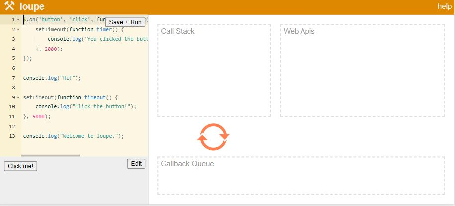

Асинхронность
console.log(1);
setTimeout(function () {
console.log(3);
}, 5000);
console.log(2);
результатом будет: 1 2 3
функция не блокирует выполнение остальной части кода
Call Stack, Web Apis, Callback Queue.
const button = document.getElementById('button');
button.addEventListener('click', function onClick() {
setTimeout(function timer() {
console.log('You clicked the button!');
}, 2000);
});
console.log("Hi!");
setTimeout(function timeout() {
console.log("Click the button!");
}, 5000);
console.log("Welcome to loupe.");
Ссылка на демо
- 
- Изначально Call Stack, Web Apis, Callback Queue пустые.
- Начало выполнения кода, обработчик события на кнопку
'button'попадает в Call Stack, после этого попадает в Web Apis. (и там сидит, ждёт) А Call Stack пустой после этого. - Дальше выполняется
console.log("Hi!");. Он попадает в Call Stack, в консоле выводится 'Hi', после чегоconsole.log("Hi!");удаляется из Call Stack. - Затем
setTimeout. Он попадает в Call Stack, затем в Web Apis, а Call Stack освобождается.timeout()начинает выполнятся в Web Apis. Идёт 5ти секундный отсчет. - В то же самое время, после освобождения Call Stack от
setTimeout, туда попадаетconsole.log("Welcome to loupe.");, в консоли выводится 'Welcome to loupe.', после чегоconsole.log("Welcome to loupe.");удаляется из Call Stack. - На следующем шаге происходит ожидание событий. Call Stack пустой, Callback Queue пустой. В Web Apis продолжает сидеть и ждать события
'button'. И идёт отсчетsetTimeout. - Через 5сек таймер завершается, функция
timeout()перемещается в Callback Queue. - Event Loop проверяет, пуст ли Callback, затем перемещает
timeout()в Call Stack. - Далее в Call Stack происходит вывод в консоль
console.log("Click the button!");. После чегоconsole.log("Click the button!");удаляется иtimeout()удаляется из Call Stack. - Всё это время обработчик события остаётся в Web Apis. После того, как происходит клик по кнопке, в Web Apis срабатывает обработчик клика. Внутри клика вызывается
setTimeoutс таймером 2сек, это функцияtimer(). - 2 секунды истекают, таймер завершается. Функция
timer()перемещается в Callback Queue. - Event Loop проверяет, пуст ли Callback и перемещает
timer()в Call Stack. - Далее в Call Stack происходит вывод в консоль
console.log('You clicked the button!');. После чегоconsole.log('You clicked the button!');удаляется иtimer()удаляется из Call Stack. - Обработчик события
'button'продолжает сидеть в Web Apis.
Итоговый порядок вывода:
Hi!
Welcome to loupe.
Click the button!
You clicked the button!
Принцип работы Call Stack
Last in, fist out - последний зашел, первый вышел
Принцип работы Callback Queue
First in, first out - первый зашел, первый вышел